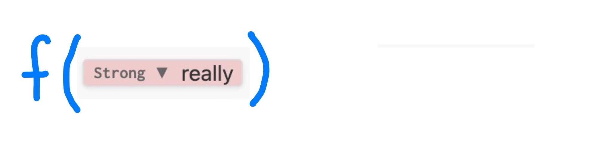

Filters and Shortcodes
Extending Quarto workshop @ posit::conf(2025)
What are filters?
What are filters?
Filters manipulate the AST between the parsing and the writing phase. First, understand the AST.
AST: A document is composed of Blocks
AST: Some Blocks contain other Blocks
AST: Some Blocks contain Inlines
AST: Diagrams might collapse Str and Space
A filter function transforms a type of node
E.g. A Strong filter function

→
Output: a single node of the same kind
E.g. A single Inline. Node is replaced.
Output: an array of nodes of the same kind
E.g. An array of Inline, a.k.a an Inlines. Spliced in.

Output: an empty array
Node is removed
Output: nil
Node is unchanged

AST and filter review
- A document is an array of
Blockelements - Some
Blockelements contain otherBlockelements - Some
Blockelements containInlineelements - Some
Inlineelements contain otherInlineelements
A filter function is called on every instance of a particular type of node.
The input is the node itself, the output replaces the node.
Your turn: AST
Take a look at the AST diagram on the next slide.
What are some other types of
Blocknodes?What are some other types of
Inlinenodes?If we wrote a filter for
Para, how many times would it be called?If we wrote a filter for
Str, which of the following would be affected?- The text
Filterin the title - The text
Introductionin the heading - The text
Luain the link text - The text
lua-filtersin the link URL - the text
quartoin the code block
- The text
06:00
Exercise: 03-filters/your-turns/1-explore-ast
AST
Problems solved with filters
Remove
# fmt: skipcomments from code cells. DiscussionNumber all callouts. Discussion
Put the contents of an SVG image in a raw HTML block rather than using
<img>. DiscussionDisplay the language on every code cell. Discussion
Collect all code chunks and display in a code appendix. Discussion
Writing filters
Writing filters
Filters are written in the programming language Lua.
A filter is a Lua file that contains one or more filter functions.
A filter function is a function whose name is a type of node.
A filter function on Strong nodes
A filter function that returns nil, leaves the node unchanged.
Example: 03-filters/examples/1-writing-filters
Live Code: “Print” debugging
quarto.log.output(): Positron/VS Code look in Terminal, RStudio look in Background Jobs.
Strongfilter function is called twice.elis anStrongobject, an example of anInline.elcontains acontentfield which is anInlines.
Live Code: Replace bold text with italic text
pandoc.Emph()creates aEmphnode another example of anInlinenode.el.contentgets thecontentfield from theelobject.
Other similar types of Inline elements
Your turn: Write a filter
Write a filter,
replace-emph.lua, that turns all italic text to underlined text.Add the
Strongfilter function fromreplace-strong.luatoreplace-emph.lua. What happens?
Other challenges:
Write a filter that removes all bold and italic formatting, leaving just the text.
Write a filter that converts all double quotes to single quotes.
10:00
Exercise: 03-filters/your-turns/2-write-a-filter
Valid return values
A filter on an Inline must return either:
nil, node is unchanged, e.g.no-change.lua- an
Inlinewhich replaces the original, e.g.replace-strong.lua - a list of
Inline(known as anInlines) which replaces the original, spliced into its siblings.
An Inlines with three elements
I really really like bold and really like italics, and really really really can’t decide which to use.
Example: 03-filters/examples/2-return-types
An empty list
I really like bold and like italics, and can’t decide which to use.
Example: 03-filters/examples/2-return-types
Common mistake: an array of Inlines
This won’t work because el.content is an Inlines object:
See a useful pattern in the next section.
Targeting specific content
Live Code: Targeting specific content
target-span.qmd

Example: 03-filters/examples/3-target-text
Live Code: Smallcaps all spans with class shout
Classes are in
el.classes(alsoel.identifierandel.attributes).includes()is a method on Pandoc lists.
Example: 03-filters/examples/3-target-text
Live Code: Constructing content
Your turn: Simon says
Complete says.lua, a filter that:
- targets
Spanelements with classsays, and - turns them into “Simon says” instructions.
Challenge: Instead of Simon, let the user specify the name as an attribute, e.g. [Write a filter]{.says name="Charlotte"}
10:00
Exercise: 03-filters/your-turns/3-simon-says
Filters in practice
Target content in a div
Example: 03-filters/examples/4-filters-in-practice/1-target-content-in-div
Use walk to apply filter functions to children
Example: 03-filters/examples/4-filters-in-practice/2-walk-children-nodes
Construct format specific output
Example: 03-filters/examples/4-filters-in-practice/3-format-specific-output
Filter function on Meta to examine metadata
Example: 03-filters/examples/4-filters-in-practice/4-meta-filter
Controlling the order of filter functions
Filter functions in the same filter are run in a specific order: Inline elements, Inlines(), Block elements, Blocks(), Meta(), Pandoc().
Specify a different order by returning an array of filter sets.
Example: 03-filters/examples/4-filters-in-practice/5-filter-sets
Controlling when a filter runs
Quarto’s internal filters are grouped and run in sequence: ast, quarto, render.
By default, custom filters are run pre-quarto.
You might need to run a filter later, e.g. after quarto has processed cross-references.
Wrapping Up
Filter extensions
quarto create extension filter creates boilerplate. Drop your .lua files in.
Users must opt-in to extension under filters:
Filters in custom format extensions
Users specify format: shouty-html, and get filter applied automatically.
Shortcodes
Lua functions that insert their output into the AST.
Can take arguments: args, kwargs, meta, raw_args, context
Learning Lua
https://quarto.org/docs/extensions/lua.html#learning-lua
I also quite liked: https://ebens.me/posts/lua-for-programmers-part-1/
Questions?
AST diagrams are WIP
The AST diagrams you’ve seen are produced using Pandoc’s version of markdown.
Quarto specific features won’t appear in the AST diagrams as you might expect. E.g. cross-references, executable code blocks (ones with {), shortcodes, callouts, etc..
Use quarto.log.output() to examine the AST as it is when your filter is run.
This will improve!